Rotinas SEI
Incluir Medida Protetiva no SEI
- Abrir o arquivo da MPU
- Checar as informações da MPU
- Checar se possui endereço e/ou contato telefônico
- Iniciar Processo na aba PM-CASNUPEVIDPMP
- Inserir documento
- Gerenciar Marcador / Etiqueta
- Incluir em bloco
- Acessar a unidade que o processo foi enviado
MPU envolvendo Policias Militares
Mandados de Prisão
Medida Protetiva
- Abrir o arquivo da MPU
- Checar as informações da MPU
- Checar se possui endereço e/ou contato telefônico
- Iniciar Processo na aba PM-CASNUPEVIDPMP
- Inserir documento
- Gerenciar Marcador / Etiqueta
- Incluir em bloco
- Acessar a unidade que o processo foi enviado
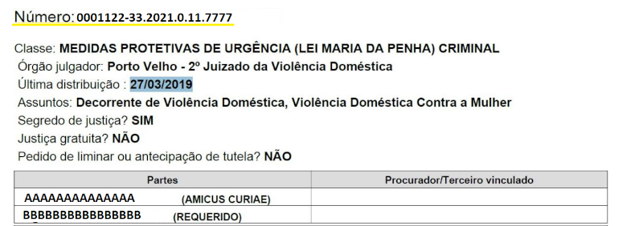
* Fazer pesquisa no SEI para verificar se já possui processo.
- Pelo nº do Processo;
- Pelo nome da requerente; ou ainda,
- Pelo nome do requerido.
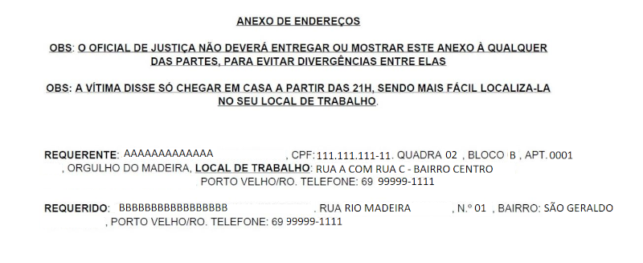
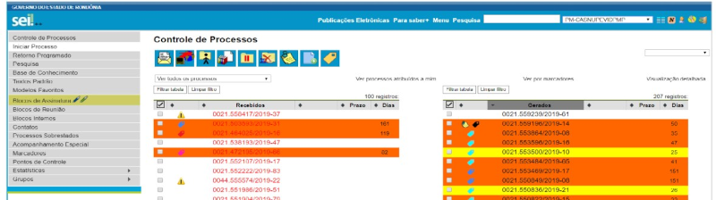
* Escolha como tipo de documento comunicação interna
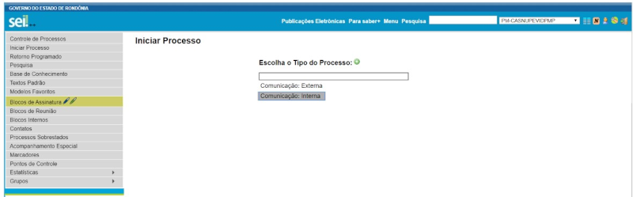
* Em especificações colocar o nome da requerente
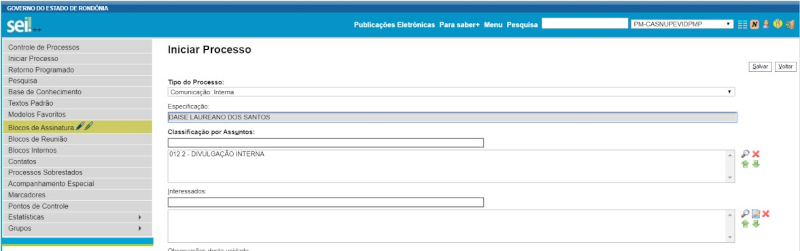* Nível de acesso: Restrito
* Hipótese legal: Segredo de justiça processo penal
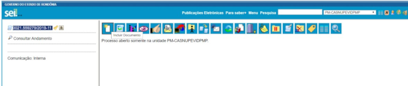
* Escolher tipo de Documento: Externo
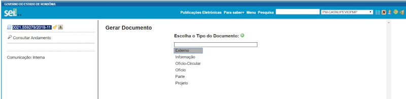Tipo de documento
* pode ser usado Decisão/Sentença/Informação/Boletim de Ocorrência, conforme constar na MPU.
Demais dados a serem preenchidos:
* Data atual;
* Formato nato digital;
* Nível de acesso - Restrito;
* Hipótese legal - Segredo de justiça processo penal;
* Anexar o arquivo;
* Confirmar dados.
Observação: Colocar sempre antes do nome da requerente o Tipo de MPU
* PRORROGAÇÃO;
* 2ª PRORROGAÇÃO;
* NOVA MPU;
* ADVERTÊNCIA;
* EXTINÇÃO, etc.
* Selecionar a Etiqueta correspondente ao mês de lançamento
* Data - colocar a data da MPU no formato do ano com 4 dígitos: 01/01/2021
* Salvar
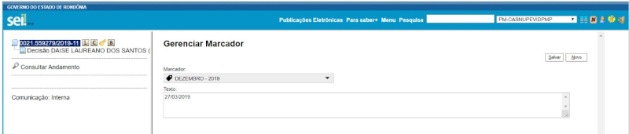Incluir o processo no mês correspondente
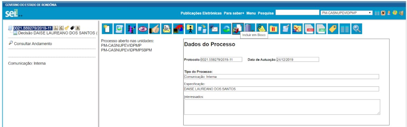 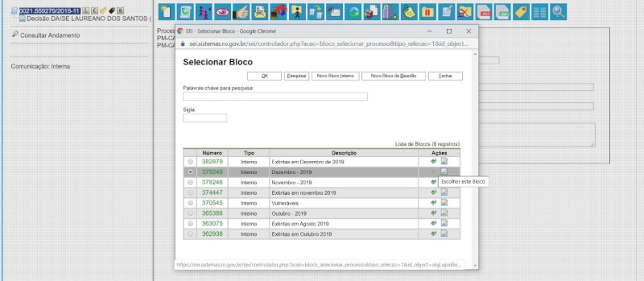Enviar o processo e manter aberto na unidade PM-CASNUPEVIDPMP
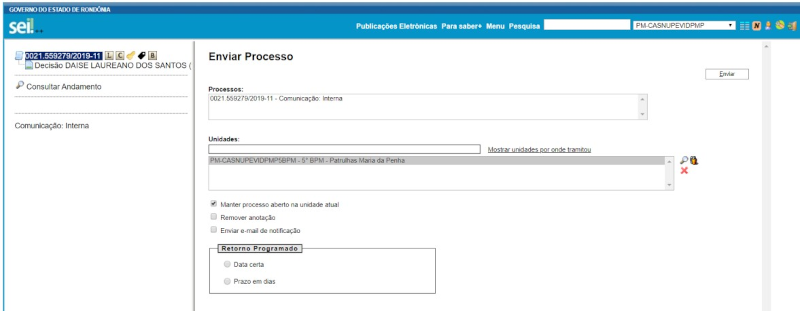Obs.: de preferência deixe aberta uma guia anônima no navegador onde é possível trabalhar simultaneamente no SEI.
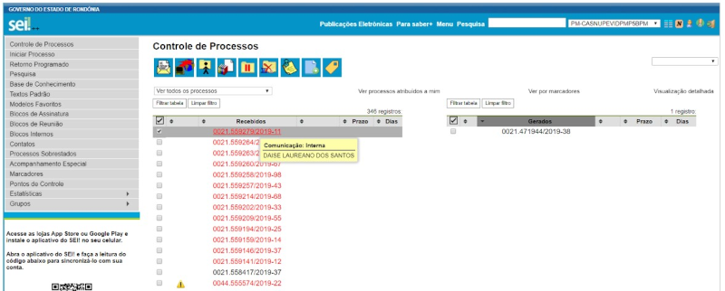Acesse o processo e Selecione gerenciar marcador escolhendo uma das opções disponíveis:
Ex.:
MPU ATIVA/ PEDENTE DE VISITA
DATA – colocar a data da MPU no formato do ano com 4 dígitos: 01/01/2021
Salvar
MPU envolvendo Policias Militares
Deve ser criado novo processo no SEI de Ofício - Documento Modelo (0017073781) para encaminhamento da MPU;Incluir em bloco de assinatura para que a Chefe do NUPEVID assine;
Após assinatura da Chefe do NUPEVID fazer o envio do processo para a Corregedoria e Batalhão do Militar.
Incluir para controle na Planilha “Ocorrências com Militares” constante no Drive do NUPEVID na pasta CEMMPU.
Mandados de Prisão
Deve ser criado novo processo no SEI de Ofício - Documento Modelo (0017294116) para encaminhamento do Mandado ao Batalhão;Incluir em bloco de assinatura para que o Chefe do NUPEVID assine.
Após assinatura do Chefe do NUPEVID fazer o envio do processo para Batalhão da área correspondente. Inicio